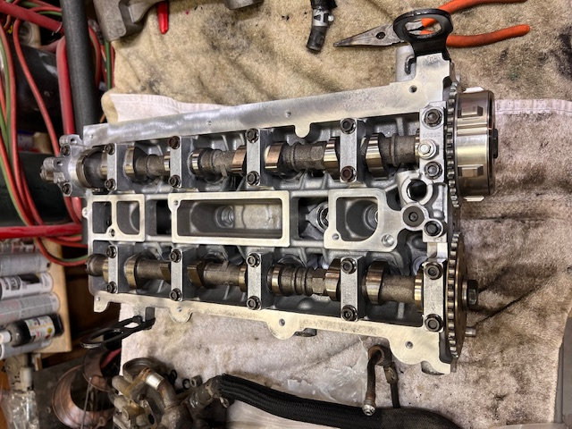

Automotive & Fabrication Projects
Hands-on mechanical engineering, diagnostics, and fabrication projects.
This page documents independent automotive and fabrication projects involving engine diagnostics, mechanical repair, suspension modification, machining, and vehicle restoration. Projects are organized by vehicle and include photos and notes.
2010 Mazda Speed 3
Diagnosed and repaired a burnt valve. Cylinder head removal, inspection, and reassembly. Later installed performances and reliablity oriented parts, greatly enhancing driveability and fun factor.


Top-end disassembly and rebuild.
2011 Subaru WRX
Engine pull for clutch replacement, oil pickup and windage tray installation, ECU tuning, and supporting reliability modifications.
1990 Nissan D21 Prerunner
Fueling, wiring, brakes, and suspension restoration and resale build.

Bed cage and suspension setup on prerunner truck.
Machining & Engine Work
Valve seats, guides, engine disassembly, and precision machining.